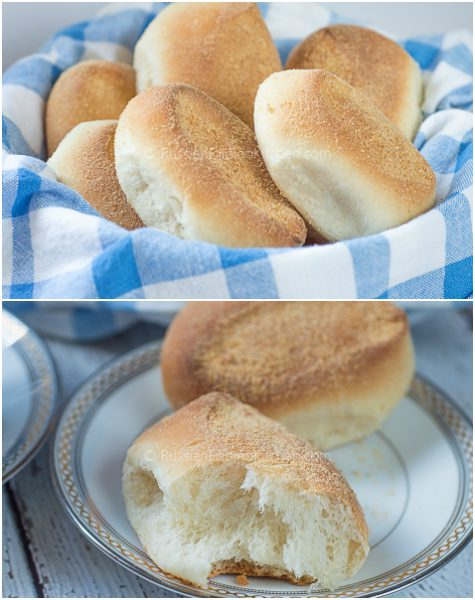
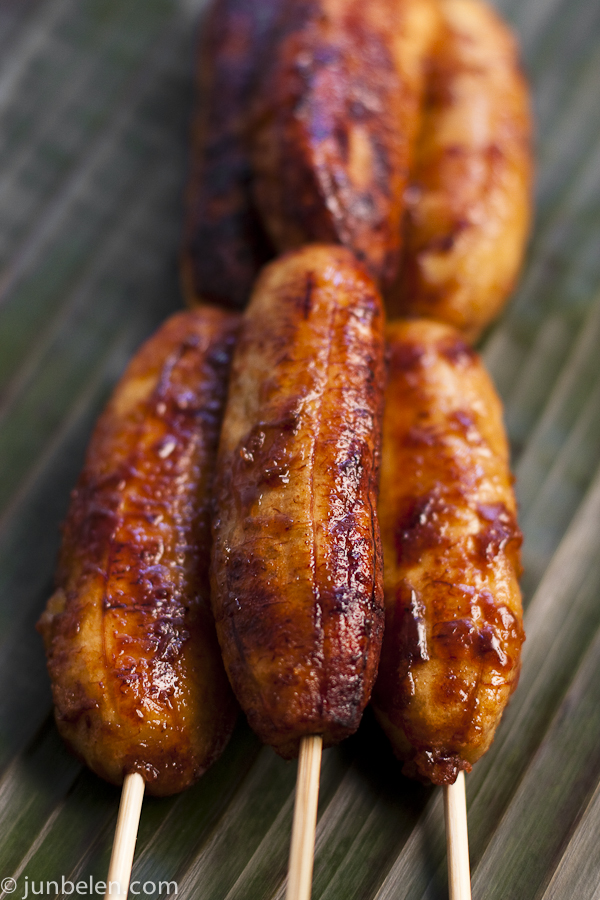
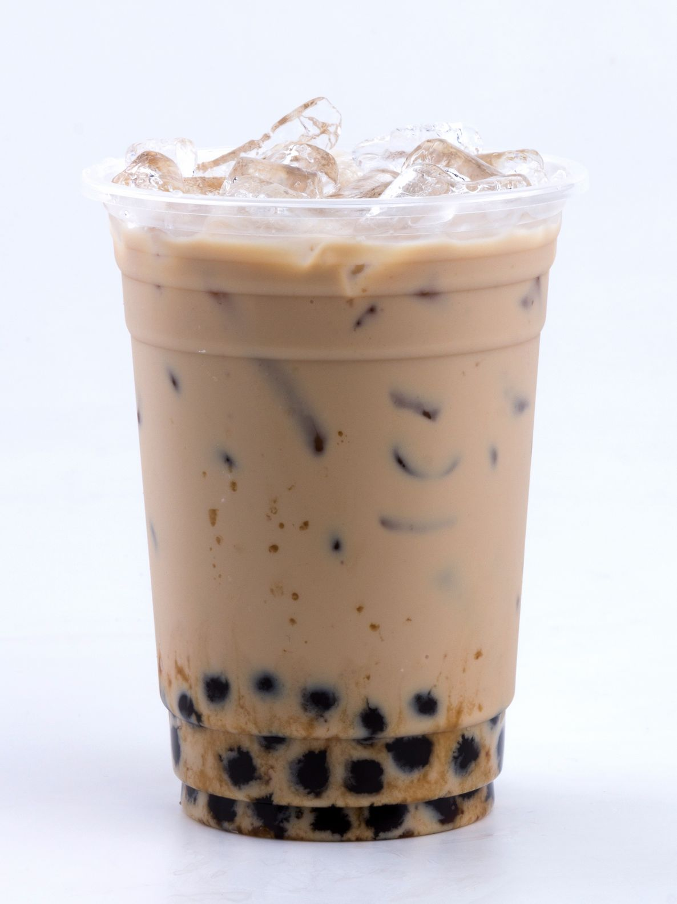
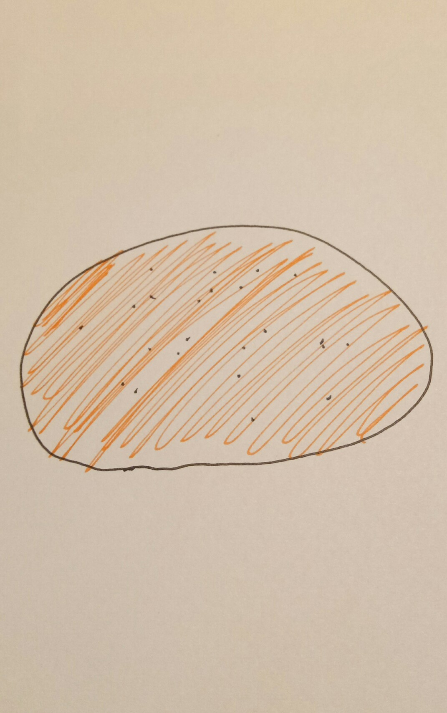
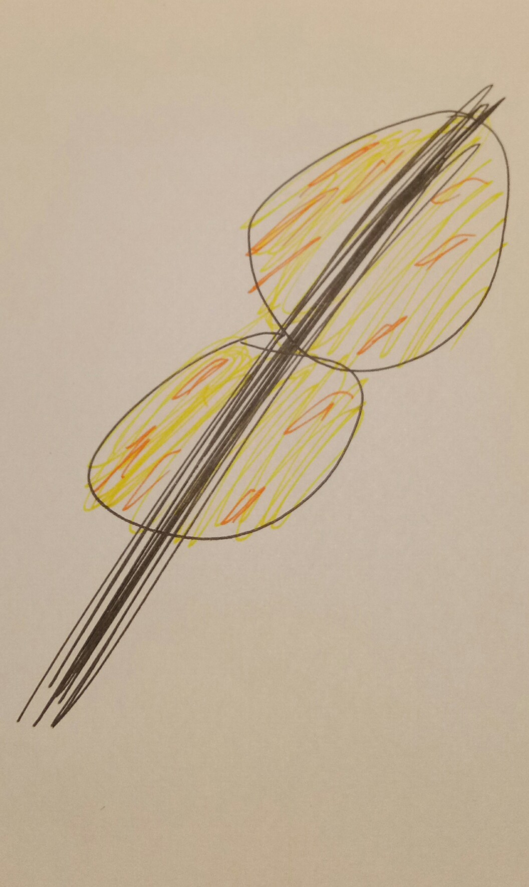
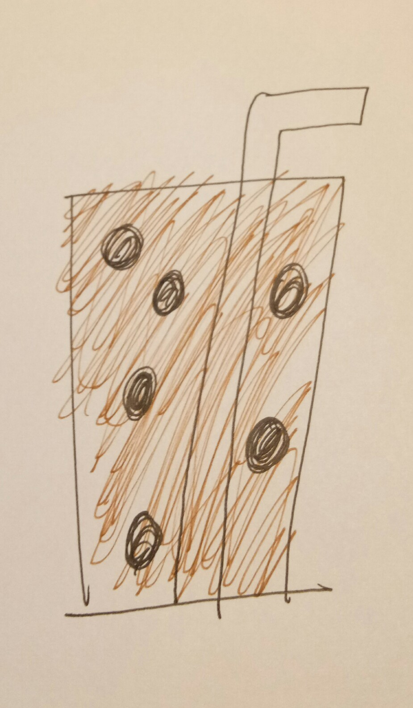
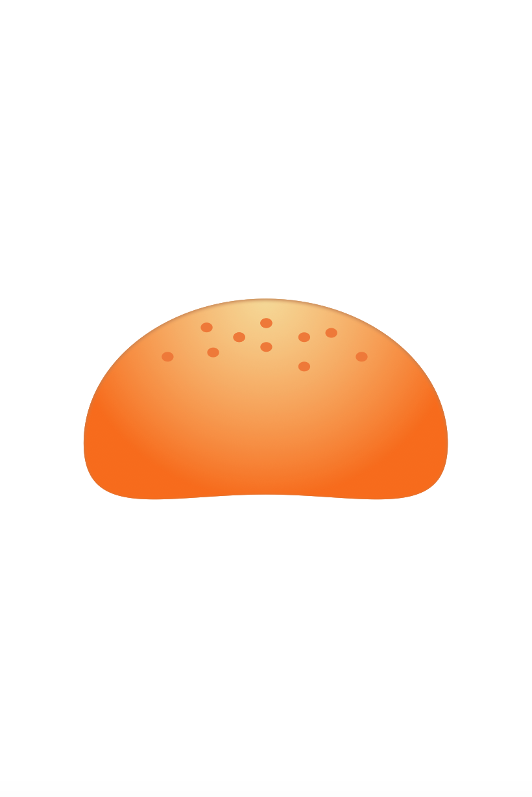
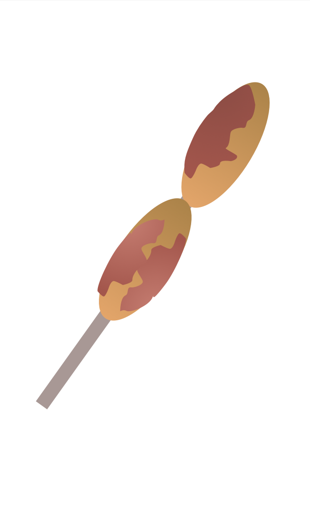
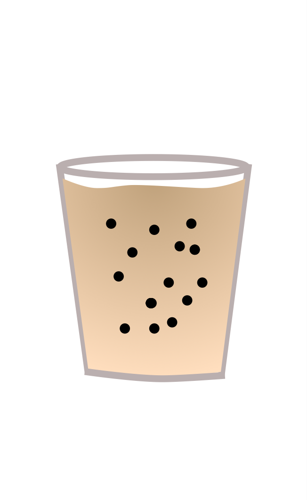

Emojis are the future of how we interact with people. More and more, people have been using emojis to replace words in many conversations. But a key issue of emojis is that they are usually very specific. They key in on a special commonly-used term, object or feeling, and draw out a representation for it.
Hence, we have emojis for everything, from salsa dances to aubergines (eggplants for Americans), there's an emoji for a lot of common things that you can find in your daily life--in the western world. Since most of the emojis are much about life in the West, a lot of cultural emojis that represent life elsewhere has not yet been made.
Why Filipino Food?
Here is where I come in. I feel that emojis should represent other objects, feelings or terms from other parts of the world. And of course, as I was thinking of this, I thought creating emojis for my native Philippines seemed like a great idea.
Specifically, I zoomed in on food. That is because food is something that unites Filipinos as a country. It's something that makes us feel fuzzy and happy. It's one of the things we're actually really really proud of. It's also something that is very common in Filipino life that is just not available in emoji form.
And so that is where I began my quest.
Methodology and Process
To develop Filipino Food emojis, I wanted to use an interative design process where I first designed on paper, conduct user interviews to get feedback, then designed again on the computer, conduct user interviews once more, and propose next steps. Hence, that's how this post is structured. It goes through the design thinking process I went through in order to come up with the final designs.
Filipino Food to Emojify
Pandesal
Pandesal is a common bread roll in the Philippines made of flour, eggs, yeast, sugar, and salt. It is usually served for breakfast, and dipped into coffee. Paired with jam or CheezWhiz (a kind of cheese spread in the Philippines), it is the ultimate breakfast gamechanger.
BananaQ
A Banana cue or Banana Q (Tagalog: Banana kyu) is a popular snack food or street food in the Philippines. It is made of local Philippine bananas then deep fried with local muscovado sugar to create a crisp caramelized shell. It's a merienda (afternoon snack) staple across the country.
Milktea
MilkTea, while not exclusively Filipino, is a drink that has become very popular in the Philippines over the past few years. It's a very sweet drink paired with black tapioca pearls. With new flavors such as Ube Milk Tea, Yakult Milk Tea or Almond Milk Tea, it's the ultimate summer cooler.
First Iteration: On Paper
Design Elements
For the first iteration, I wanted to create just a sketch of what the food might look like. I looked at the pictures across the internet to get a sense of the shape, size, texture and other specific characteristics of the food. With that, here's the first iteration of the emojis.
Pandesal
For the pandesal, I drew a fluffy brown blob with the signature morsels of seasosoning on top.
BananaQ
For the BananaQ, I emphasized the stick and the fact that there are 2 bananas on it.
Milktea
For the milktea, I made sure the black tapioca pearls present as they are a very common signifier for milktea.
User Feedback
Since I didn't want to scare anyone away with my terrible drawing skills, I showed this to my mom and brother. In general, they were really happy with the design. They were able to guess the items quite easily, except for the first. The specific points for improvement were as follows for the three emojis.
-
For the Pandesal, I got feedback that concentrating the seasoning on the top would make it more identifiable. Also, making the shape less blobby and more circular will make it easier for people to recognize the Pandesal. Working on the colors will also make it better.
-
For the BananaQ, making the color less yellow was more golden-brown was a feedback datapoint. Making the stick less visible was also a comment. The caramelized shell should also be spread out more evenly was an idea.
-
For the MilkTea, removing the straw would be useful because Milktea can be consumed without a straw. Also, adding more pearls would be a great idea as there are way more pearls than I had originally added.
Improvements
With this in mind, I went ahead to modify the current designs. Specifically, I made the Pandesal less like a blob, and more circular, as well as made sure that the seasoning was more concentrated on the top. For the BananaQ, I hid the stick within the BananaQ, as well as made the caramelized portion more prominent. For the MilkTea, I added more pearls and also removed the straw.
Second Iteration: On Sketch
Design Elements
For the second iteration, I knew I had to save everyone from my terrible drawing skills, so I designed the emojis on Sketch, a graphic design tool. I did this, so that, if it would be possible, I can actually propose these designs to Unicode, so that they may be added to the Emoji keyboard in the future! But enough of my talking, and here are the emoji designs!
Pandesal
For the Pandesal, I added a pretty gradient, made sure the color was right, and also made the shape more circular. I also tried to give the Pandesal a dimple.
BananaQ
For the BananaQ, I made sure the stick was hidden, and emphasized the caramlized part a lot. I also made the shape more oblong-y.
Milktea
For the milktea, I removed the straw, added tons of black tapioca pearls, and added a gradient to the drink to make it more realistic.
User Feedback
With a little bit more confidence in myself, I showed this to three friends, Ana, Dominic and KatKat. All of them are from my hometown. They liked the designs, but had the following feedback.
-
For the Pandesal, it can be easily confused with a bun, so adding a couple of them might be helpful. Other than that, they found the Pandesal easily recognizable.
-
For the BananaQ, it was already pretty on point, a further detail to add would be the lines that naturally happen on bananas. Some seeds would also be helpful to make sure the banana is easily distinguishable.
-
For the Milktea, the design without the straw was pretty accurate, but having more pearls at the bottom of the drink would be more helpful as the reality is that gravity pulls most of the pearls down.
Improvements
With those in mind, the improvements I could work on next time were the following.
-
For the Pandesal, maybe find a way to bunch it up with a few other Pandesals.
-
For the BananaQ, I felt that the feedback given was very specific, but in the real world, wouldn't be really helpful. That is because the emojis would be very small, and so, these fine details such as the lines or the seeds would probably just be missed, and so it might not make sense to add them.
-
For the Milktea, having more pearls at the bottom might be a great idea, but "idealized" versions of milktea have the pearls floating around, and this might be an easier emoji to use since people already visualize Milktea as with pearls floating around in ads and other media, and not as coupled together at the bottom of the glass. And plus, who would want pearls bunched up at the bottom of the cup?
Next Steps
I really enjoyed this process of crafting emojis for Filipino food. I'm looking to improve these current designs even more, and possibly even submit it to Unicode and see what they think.
At the end of the day, I think this process of involving more diverse cultures into emoji libraries should become more mainstream. I hope that these three emojis of Pandesal, BananaQ and Milktea can become a catalyst for more cultural emojis that bring more diverse objects, feelings, and experiences into everyone's phone.